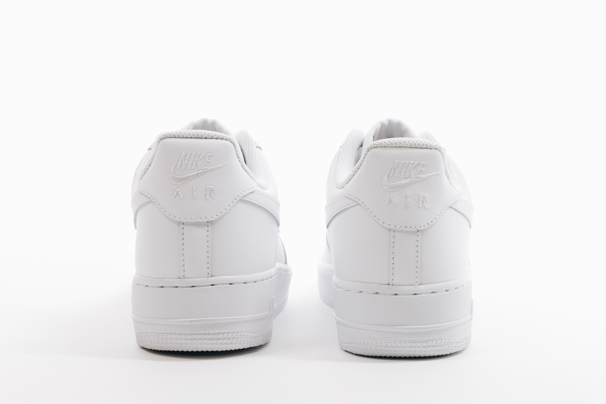
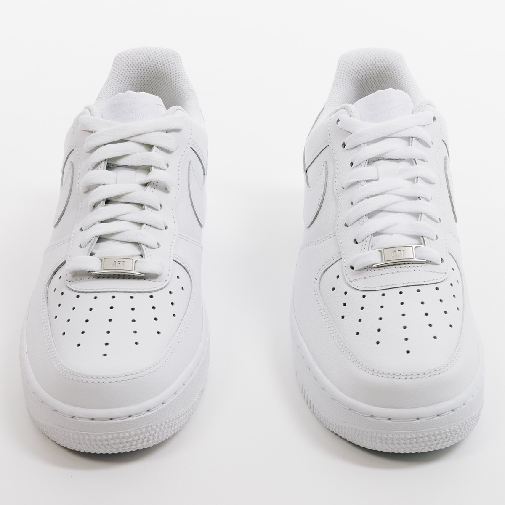
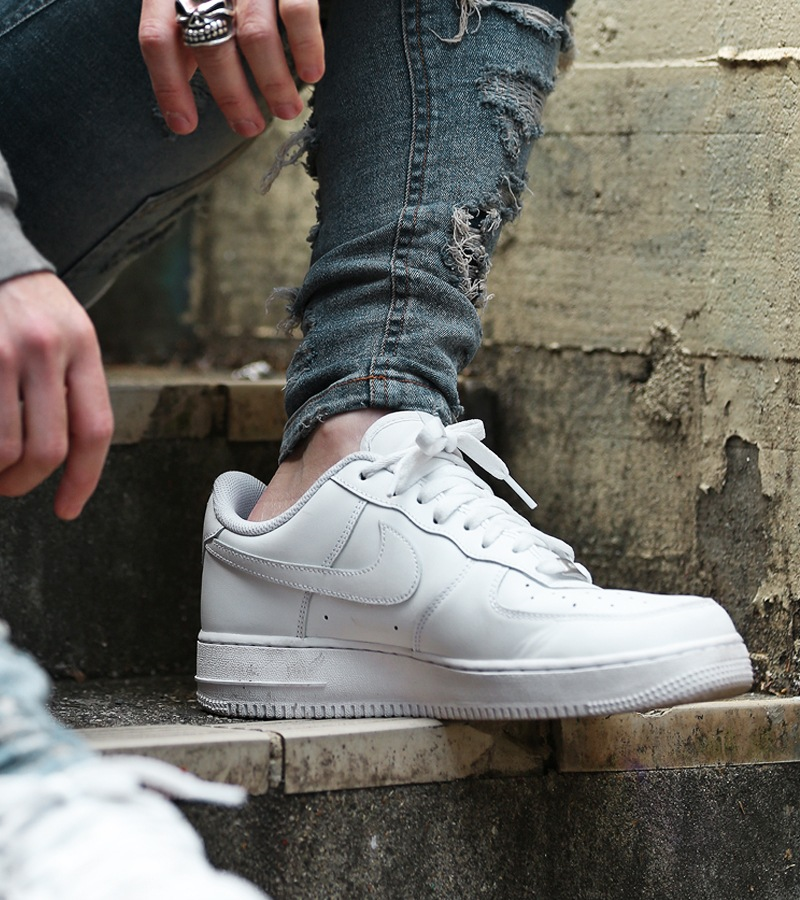

NIKE Air Force
FEATURE & LINE UP
FEATURE
-
“エア”を搭載した抜群のクッショニング
ウレタンミッドソールの内部に、圧縮ガスを内蔵したエアバッグを埋め込んだエアクッショニングシステム。ミッドソールに同テクノロジーを封入することで、非常に優れた衝撃吸収性と反発力を兼ね備えています。
 -
レザーの高級感、ベンチレーションによる通気性
アッパーには天然由来のレザーを採用し、高い耐久性と高級感溢れる質感を兼ね備える。さらに肉厚なフォームによって優れたフィッティングを確保していますが、アッパーにパンチングによるベントレーションもしっかりと設けられているので、通気性が高く快適な履き心地。
 -
何にでも合う。大人カジュアルを支えるルックス
革靴を合わせては面白みがない。そんなときにこそ、「エアフォース1」のボリュームが良い仕事をするのです。白を選べば清潔感を担保できますし、デザインは無駄がないためジャケパンスタイルにだってマッチしてくれます。

LINE UP

NIKE AIR FORCE1
①「快適さを追求した機能美がアクセントになったシンプルな設計」
バスケット選手の要望によって施されることとなったベンチレーションホールは、運動時における通気性を確保。皮革素材を多く用いるが、熱のこもりにくい快適な履き心地を実現している。
②「ホールド感を追求した肉厚な履き口が履いていてクセになる」
エアフォース1の快適性は、エアクッションシステムだけではない。シュータンの裏側やかかと部分などを肉厚に設計することで、靴擦れしにくい足当たりの良さと快適な歩き心地を実現している
NIKE AIR FORCE GORE-TEX
①「ゴアテックス」で水気の侵入をシャットアウト！
アッパーには、雨の侵入を高い撥水性能で防ぐ「ゴアテックス」素材が使われているので、天候を気にせずにガンガン履き込めてしまう。
②「「AF1」ならではの高いクッショニング性を継承！
ナイキのシューズテクノロジーを象徴するエアクッションシステム「ナイキ エア」を、ミッドソールに初めて搭載したバスケットボールシューズとしても知られています。クッショニング性能の高い快適な履き心地を提供してくれます。
NIKE AIR FORCE SHADOW
①カジュアルなカラーリングで可愛らしさアップ！
多彩なレイヤードスタイルを楽しめる「Air Force 1 Shadow・エア フォース 1 シャドウ」。シンプルなカラーからプレイフルな配色まで、カラー展開が豊富です。ミッドソールが厚めで、スウェットなどの“コージーリュクス”なコーデに合わせたい一足です。